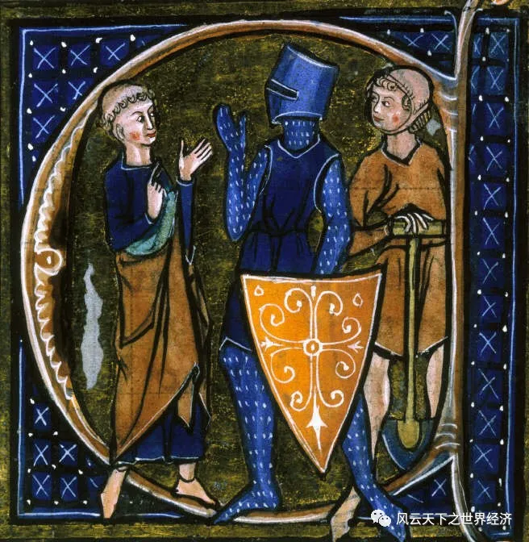
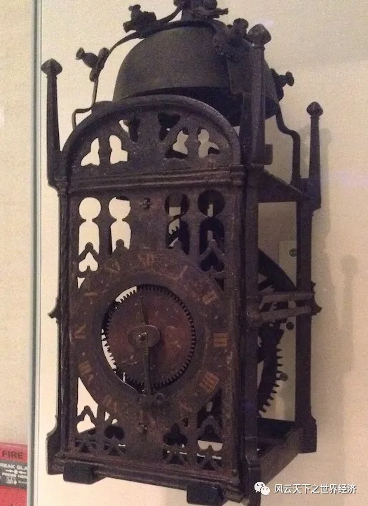
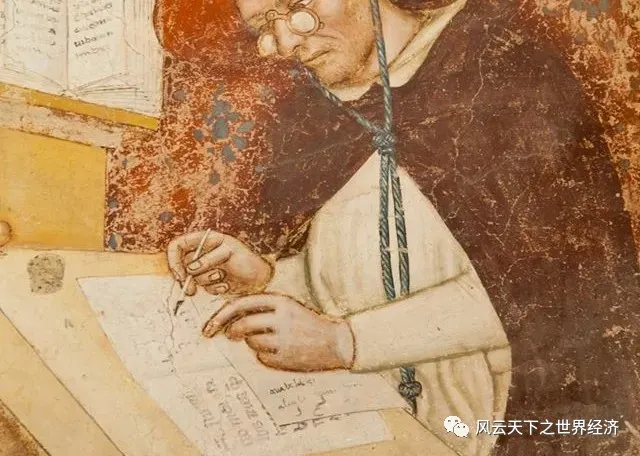
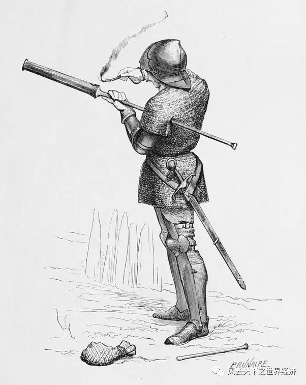
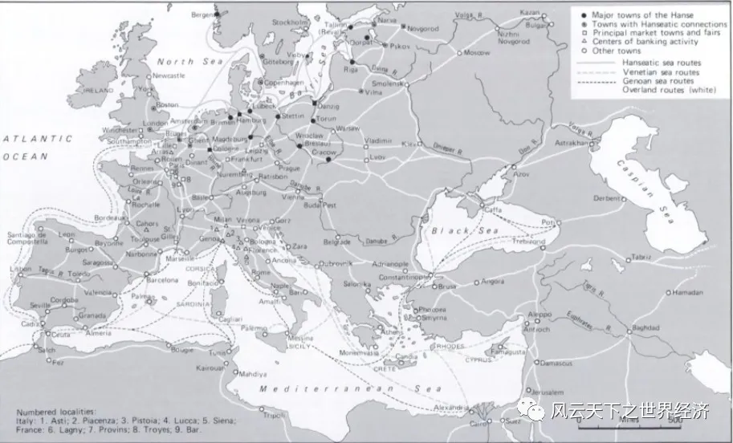
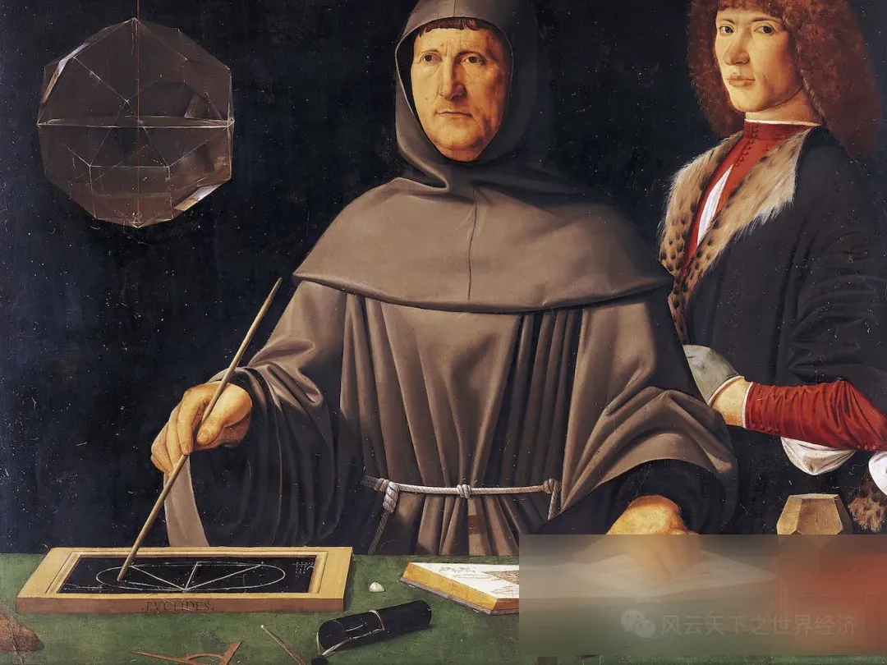
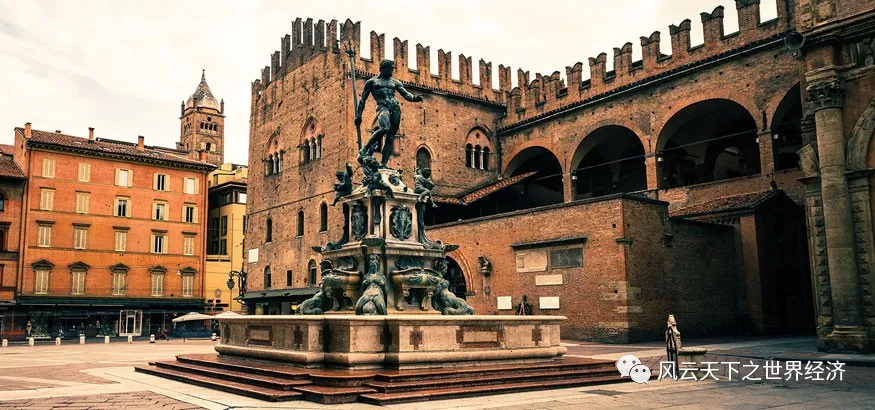
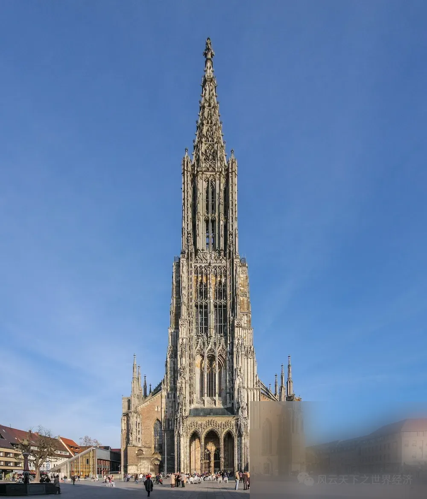

> 那些口口声声说着“一代不如一代”的人，应该仔细审视一下这个时代。
在人类历史上，有这样一个千年，它曾经被下一代冠以“黑暗时代”的名号。为了标榜自己的伟大贡献，人们采取羞辱先人的办法，把自己从事的活动称为“文艺复兴”。
这个千年，从西罗马坍塌的城垣边向我们走来，在穆罕默德二世轰击君士坦丁堡城墙的炮声中离我们而去。它一直被视为罗马帝国荣耀与文艺复兴辉煌之间的幕间休息，是两个伟大之间的屏息。
476和1453，这两个数字围成了一个枷锁，框住了一千年的时间，也框住了后人的视野。其实，这两个数字也围成了一扇窗，现代文明的微光已然照进了历史。
血腥的“十字军东征”和致命的黑死病是这个千年的代名词。世界不复有罗马城的荣耀，整个欧洲大地匍匐在教会的统治之下，宗教裁判所的火刑柱上灼烧着扬·胡思、布鲁诺等一众先贤的肉体，同时也将他们的精神扬向空中。
人们不肯相信，在一个“骑士打仗、教士祈祷、农民劳作”的极简社会中，能够孕育出任何和文明相关的事物。

骑士打仗、教士祈祷、农民劳作
但是，这并不是事实。
1发明了“发明”
在这一个千年，人类发明了机械钟，首次校准了时间的价值。
在此之前，基于对天体运行规律的把握，大部分人对于时间的计量只能精确到晨昏。日出而作、日落而息，时间就是在这样的粗线条里流淌了一个又一个千年。
后来，有了日晷和水钟，一天的时间才得以被细分。但是在那些没有太阳或过于寒冷的日子，时间则又遁入混沌。
直到13世纪的后25年，一个能够将一天等分为24个小时的机械才在意大利出现。从中世纪开始，教堂的钟声在每一个整点准时响起。此刻，朝圣者虔诚地驻足凝望，新的世俗权威的诞生，引导他们去思考生命的全新价值。
机械钟发明的意义远不止在于计时本身。它使人们对于时间流逝的意识更加清晰。正如戴维·兰德斯说，时钟是中世纪所有机械发明中最伟大的成就，因为这是观念上的革命、数字化的先导。

中世纪发明的机械钟
没有准确的计时装置，所有人对于时间的感知都是自我的，机械钟则为集体活动提供了准时的标准，协调了集体与个人的秩序，由此迸发出来的生产率提升，超过了所有勤劳汗水的总和。
商业契约里首次标明了时间，“时间就是金钱”的格言就此名副其实。
“是时钟，而非蒸汽机，是现代工业时代的关键性机械”——刘易斯·芒福德如是说。机器无用的陈腐观念就是在中世纪被打破的。
在这一个千年，人们发明了眼镜。透过那些或凸或凹的玻璃，一个更加清晰的世界被呈现出来。
所有被近视或者远视所困扰的人们，都应该好好感谢一下这个时代。

最早的眼镜出现在中世纪
这种神奇的发明最早于13世纪末首次出现在意大利比萨。到15世纪中叶，佛罗伦萨和威尼斯成为眼镜制作中心。
它的出现成就了一个新的产业，但其对于经济史的意义却远远不止这么简单。对于从事农业劳作的人而言，眼镜的存在几乎没有什么价值，但是对于抄写员、读书人、钟表匠、精细的织布工、贵金属加工者等工匠而言，它的意义非凡。
眼睛是上天给人类的吝啬恩赐，因为它只有40年的正常使用期。当一个人从事精细工作20年后，他的眼睛开始不能聚焦于眼前的事物时，从业经验也恰恰在此时达到峰值。
眼镜的出现让一个40岁老眼昏花的工匠可以再工作20年以上，学习曲线在眼镜的助力下，带来了效率的成倍增加。
眼镜有效地延长了眼睛的使用寿命，也让精细劳动成为可能。在指引方向这个问题上，中国有司南、穆斯林制作了星盘；但是中世纪的欧洲，则发明了计量器、测微计和齿轮切割器；他们的发明，为组合机械提供了适合的零件，奠定了精密机械组合的基础。因此，在对待中世纪的态度上，现代人的确需要一副眼镜。
在这一个千年，还有很多过去不起眼的发明获得了新生。
在13世纪末14世纪初，欧洲从中国觅得火药的配制技艺。这些神奇的粉末在中国古人眼前创造出了绚烂的烟火，却没有照亮蒙昧的夜空。14至15世纪欧洲火器在改良火药的助燃下，让爆炸技术日新月异。这不但改变了战争的面貌，也改变了欧洲的版图。

中世纪士兵在装配火器
所有人都知道纸是中国人发明的，但是几乎很少有人知道，13世纪的欧洲首次出现了机械造纸。千万双勤劳的双手被水力驱动的机械齿轮所取代，工业文明在中世纪影影幢幢。
轮式铁铧犁剖开了欧洲西北部肥沃的土地，三田轮作的出现使得农田的生产率提高了1/3，在耕地上种植三叶草、豌豆等含氮植物，可以维持和提高土壤的肥力。这些都让人口的第一次S型增长得以在10-12世纪完成。人口的增加带来了边疆运动，尽管很多活动都是以宗教的名义进行的，但是却让中世纪的生产方式在欧洲的大部分地区扩散开来，促进交流的同时也带动了商业的发展。
2布尔乔亚、香巴尼与商业创新
> “布尔乔亚”的起源
采邑经济将农民捆绑在了土地上，缓解了农民“失地”的隐忧。对农民而言，以人身自由去换取土地安全，这与罗马后期农民的流离失所相比，不啻是一种进步。当然，相对于毫无人身自由的奴隶而言，这也是一种更加经济地使用稀缺劳动力的方式。
在罗马帝国时期，以征服为名的战争和暴力筑起了帝国的经济基础，它不仅是生存方式，也是娱乐的方式。而中世纪采邑经济自给自足，人们的生活终于稳定下来。“布尔乔亚”一词，也起源于此。
欲望与消费的古典记忆在这个时代被唤醒，并滋养了商业。
大型政治单位的消失让秩序崩坏，但是却没有阻止商业在某些局部的范围留存并发展。在中世纪，地中海成了穆斯林的海，正是伊斯兰势力的介入，使得中世纪早期衰败的欧洲商业在11世纪被重新激活。

中世纪经济鼎盛时期
在意大利，地中海贸易让城市生活率先在威尼斯、热那亚和比萨等港口城市复苏。基督教商人与黎凡特地区的伊斯兰商人贸易，把香料丝织品等珍稀带入欧洲。
香巴尼的香槟集市
在中世纪重要的朝圣之路——弗朗西斯吉娜（Via Francisgena）古道上，来自遥远东方的货物从伦巴第的城市出发，翻过阿尔卑斯山的几个重要隘口，在带着桶装白兰地的圣伯纳德救护犬的引导下一路北上，在香巴尼地区和来自弗兰德斯的稀有物产相遇，成就了繁荣的香槟集市。
每年的集市始于1月寒冷的马恩河畔拉尼集市，终于11月寒冷的特鲁瓦集市。六次商业盛会吸引着来自法国、德国、英国、意大利、西班牙和中欧的商人，在金币落袋的撞击声中，来自四面八方的天下货品从这里走向四面八方。
在欧洲的北端，维京人开创的北海和波罗的海贸易网络被13世纪的汉萨同盟继承，这个以吕贝克为中心的商人自治团体，在鼎盛时期覆盖了波罗的海沿岸160座城市，在一片混乱的夹缝中倔强地维系着商业的秩序，成为经济史上最不可思议的商业奇迹。
贸易催生的商业创新
在这一个千年，人类首次开始使用现代簿记。阿拉伯数字让商业再次幡然醒来，印度洋来往不绝的商船再次沟通了亚非拉的稀有物产，文明也得以在更广大的区域铺展开来。尽管直到1494年，意大利教士卢卡·帕乔利才在《算术、集合、比及比例概要》一书中对簿记方法做了简单易懂的说明，但是复式记账法早在1300年左右就在意大利商人中流行起来，并有了一种固定的形式。对于中世纪的商人而言，这是一面能够正确反映出自己和他人经营状况的魔镜，商业经营的秘密在它里面显露无遗。

帕乔利和复式记账法
和复式记账法一起普及的，还有资产、负债、利益等概念，现代商业的样子在中世纪渐露峥嵘。
13世纪，十字军时代负责保护耶路撒冷朝圣者的圣殿骑士团采用了支票这种形式。朝圣者在家乡将金银交给圣殿骑士团并据此开出收据，可以凭借收据在圣城兑换金银。而且和现在的银行卡一样，在兑换时骑士团将收取手续费。后来支票在伊斯兰世界中得到了普及，作为一种“付款凭证”，它成为现代支票的前身。
中世纪的城邦林立带来了货币的混乱，货币兑换成为商人们从事长距离贸易的共同需求。在意大利，先知先觉的商人在港口、市集摆上了长板凳（意大利语Banca，即bank），专事货币兑换业务。随着商业的繁荣，“坐板凳的人”（banker，银行家）手中聚集起大量货币资金。当货币兑换商从事放款业务时，银行业就此产生。
3大学、哥特式以及其他
在这一个千年，一种叫做大学的组织在意大利博洛尼亚率先建立起来，从此它成为人类智慧的收纳所，传承着先哲们的精神遗产，也激扬着理性的光辉。科学的种子在这一方土地上沙沙生长。
虽然博洛尼亚大学在1155年首创的学术自由精神在后世中屡遭亵渎，但是在1988年9月18日，来自世界各地的430名大学校长签署的《大宪章》表明，大学仍然是这一人类宝贵财富最为稳妥的领地。

博洛尼亚大学是世界上最古老的大学
在很多年以后，但丁、哥白尼、彼特拉克、丢勒将从这片人文荟萃之地走向文艺复兴的舞台中央。
在这一个千年，基督教的广泛传播让教堂在罗马以外的广大地区纷纷建起。人们在世俗的生活里觅得生计，而教堂则安放着中世纪先民的灵魂。
10世纪，失传已久的古罗马十字拱在意大利北部再次出现，建筑史进入了“罗曼式”时代。罗曼建筑的进一步发展，就是12至15世纪主要以法国城市主教堂为代表的哥特式建筑(Gothic Architecture)。
为了表达对天堂的向往，哥特式教堂的尖顶刺破云天，建筑的高度被一再刷新。直到1377年，乌尔姆敏斯特大教堂的建成，将这场竞赛的成绩永久地定格在了161.53米。

最高的哥特式教堂——乌尔姆敏斯特大教堂
科隆是中世纪重要贸易节点城市，莱茵河上往来不绝的商船将货品运往欧洲各地，却将财富留在了科隆。1248年，科隆大教堂的策划者哲学家阿尔伯特·克格努斯说，这里应该建造基督教世界里最伟大、最漂亮的建筑，因为只有这样才能配得上科隆的富足。
人们开始用肥皂清洁身体也发生在这一个千年。
肥皂的制作可以追溯到至少5000年前美索不达米亚青铜时代的苏美尔地区。但是在很长的一段时期里，它主要用于洗涤衣服、去除污渍，宗教禁欲主义也极大地限制了肥皂的使用。
在11世纪和12世纪的西班牙，穆斯林开始制作一种名叫“卡斯提尔”的肥皂，这是一种用橄榄油而非动物油制作而成的肥皂，因此具有好闻的香气。从13世纪开始，英格兰的一些较大城镇也开始使用木灰生产肥皂；15世纪初，法国人也开始用海水、灰烬和橄榄油混合制作肥皂。
肥皂在民间的大量使用，不但带来了身体的清洁和寿命的延长，也让人们对于生活的追求开始从“温饱”上升到“体面”。
就像所有的生长都离不开一粒种子，现代经济和生活的胚胎在这一个千年得以孕育。